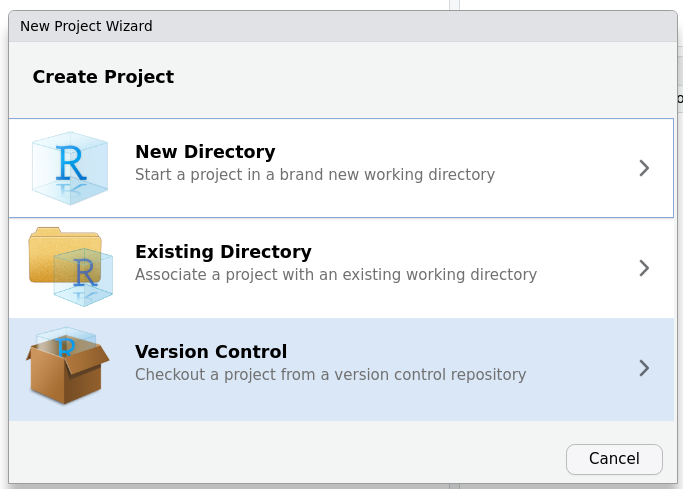
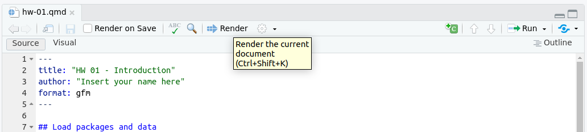
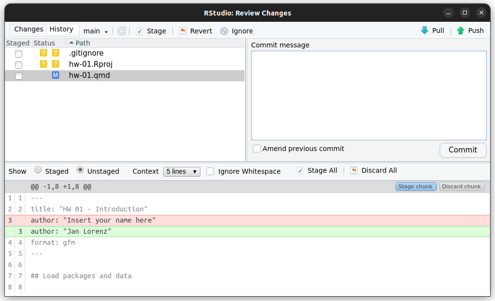
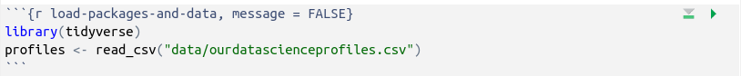

Homework 01
Meet the toolkit, your interest, and visualizations of world development
The goal of this assignment is to introduce you to Git, and GitHub with R, and RStudio, and quarto.
You need to know how to render Markdown Documents with quarto to produce your final report.
You have to know the Git and GitHub pull, add, commit, push cycle for your final delivery.
For those who are more proficient in python: Please do this excercise in R. Later you can also do your final project in with python code using quarto to render to html. The Git and GitHub cycle remains the same.
For students who have take Data Science Concepts and Tools 2022 the worflow is already known. Thus, this Homework is partly a warm-up or refresher.
The second part of the Homework is to find, prepare, and present three data visualizations of different types which you like.
1 The Git and GitHub cycle
1.1 Prerequisites
This assignment assumes that you have installed:
- R and RStudio
- In R you must have installed the package family tidyverse, e.g. with
install.packages("tidyverse") - quarto
- git
1.2 Terminology
We’ve already thrown around a few new terms, so let’s define them before we proceed.
R: Names of the programming language we will be using in this exercise and through large parts of the course.
RStudio: An integrated development environment developed for R. In other words, a convenient interface for writing and running code.
quarto: Quarto is an open-source scientific and technical publishing system built on Pandoc.
Git: A version control system.
GitHub: A web platform for hosting version controlled files and facilitating collaboration among users.
Repository: A Git repository contains all of your project’s files and stores each file’s revision history.
It’s common to refer to a repository as a repo.
- In this course, each assignment you work on will be contained in a Git repo.
- For individual assignments, only you will have access to the repo. For team assignments, all team members will have access to a single repo where they work collaboratively.
- All repos associated with this course are housed in the course GitHub organization https://github.com/CU-F23-MDSSB-MET-03-VisCommDataStory. The organization is set up such that students can only see repos they have access to, but the course instructors can see all of them.
1.3 Starting slowly step by step (especially for students without experience from Data Science Lab in Spring)
This homework guides you step by step. This will not remain as such. You are encouraged to explore beyond what the assignment dictates; a willingness to experiment will make you a much better programmer! Before we get to that stage, however, you need to build some basic fluency in the tools and the workflow we use. First, we will explore the fundamental building blocks of all of these tools.
Before you can get started with the analysis, you need to make sure you:
have a GitHub account (Note, you need to (1) sign up, (2) confirm your registration – check your emails, and (3) let the instructor know your GitHub username.)
are a member of the course GitHub organization https://github.com/CU-F23-MDSSB-MET-03-VisCommDataStory (Note, (4) the instructor needs to add you to the organization), and (5) you need to accept this invitation – check your emails.)
have the needed software stack installation on your local machine (see above)
If you failed to confirm any of these, it means you have not yet completed the prerequisites for this assignment. Please go back to Prerequisites and complete them before continuing the assignment.
2 Workflow
Some tasks and your final project will start with a GitHub repo that I create for you. This contains the starter documents you can build upon. The first step is always to bring these files to your computer and into RStudio (or your editor of choice) so that you can edit them, run them, and view your results. This action of bringing the repo’s content to your machine is called cloning.
Then you will work and make commits along the way (snapshots of your changes) and finally push all your work back to GitHub.
The next few steps will walk you through the process of getting information of the repo to be cloned, cloning your repo in a new RStudio Cloud project, and getting started with the analysis.
If there is no GitHub repo created for you for this assignment, it means I didn’t have your GitHub username as of when I assigned the homework. Please let me know your GitHub username asap, and I can create your repo.
The guide is for RStudio users. In principle, it is also possible using the command line using git and quarto commands. Also other editors like visual studio code have Graphical User Interface integration for these tools.
2.1 Step 0. Authenticate git to access your GitHub content
Before you can clone your repository you need to tell GitHub that you are authorized to do this, and to that end you need to make a Personal Access Token (PAT) in your GitHub account and make this available to git and RStudio on your local machine.
There are several ways to do this (e.g. from the command line) but as we will use RStudio anyway, we can use a convenient way provided there.
Read more about PATs and how to use them in “Happy Git with R” Chapter 9 https://happygitwithr.com/https-pat.html (in particular the TL;DR which describes what we use).
Open RStudio and install the packages usethis and gitcreds if you haven’t done already: Go to the “Console” pane at the bottom left. Type in
install.packages(c("usethis","gitcreds"))and hit Enter. Now the packages should be installed.
Now, use two commands. Copy them to the console and click Enter:
usethis::create_github_token()This opens http://github.com and you may need to log in. Then you can make the PAT (read more details in ‚ÄúHappy Git with R‚Äù). For today, you can go the fast way and do not think about the options and click ‚ÄúGenerate token‚Äù. Use the clipboard icon üìã to copy the PAT. Go back to RStudio and do in the console:
gitcreds::gitcreds_set()In the dialog in the console paste your PAT from the clipboard and press Enter. That should be it and you do not need to repeat these steps until the PAT expires. (If the PAT expires you have to make a new one in the same way.)
2.2 Step 1. Get URL of repo to be cloned
On GitHub https://github.com/CU-F23-MDSSB-MET-03-VisCommDataStory, open your repository for Homework 1.

On GitHub, click on the green Code button, select HTTPS (this might already be selected by default, and if it is, you‚Äôll see the text Use Git or checkout with SVN using the web URL). Click on the clipboard icon üìã to copy the repo URL.
2.3 Step 2. Go to RStudio
Go to your RStudio. Select “New Project…” either from the File menu or from the special project menu on the top right of the RStudio window.

In the “New Project Wizard”, click on “Version Control” and then “Git”.
If “Version Control” or “Git” is not available in your RStudio, then either you haven’t installed git on your computer or your RStudio installation has not recognized it properly. In a correct installation RStudio would recognize git on your machine when started and makes the options available automatically. You have to solve this issue first to continue.
Then paste the repository’s URL (which should still be in your clipboard) into the “Repository URL:” field. Leave directory name as it is automatically chosen, but make sure that you create the directory in a the folder where you want to store the course material on your computer via the “Browse …” button.
When you click “Create Project”
- git will create a new directory in the folder, copies all the files from github to it, and initializes your git repository locally
- RStudio will switch to that new project
3 Hello RStudio!
RStudio is comprised of four panes, which you probably know if you have used RStudio before.

- On the bottom left is the Console, this is where you can write code that will be evaluated. Try typing
2 + 2here and hit enter, what do you get? - On the bottom right is the Files pane, as well as other panes that will come handy as we start our analysis.
- If you click on a file, it will open in the editor, on the top left pane.
- Finally, the top right pane shows your Environment. If you define a variable it would show up there. Try typing
x <- 2in the Console and hit enter, what do you get in the Environment pane? Importantly, this pane is also where the Git interface lives. We will be using that regularly throughout this homework.
4 Warm up
Before we introduce the data, let’s warm up with some simple exercises.
The top portion of your R Markdown file (between the three dashed lines) is called YAML. It stands for “YAML Ain’t Markup Language”. It is a human friendly data serialization standard for all programming languages. All you need to know is that this area is called the YAML (we will refer to it as such) and that it contains meta information about your document.
4.1 Step 1. Update the YAML
Open the quarto (qmd) file in your project, change the author name to your name, and “Render” the document.

This calls quarto, and quarto renders the document. In this case, that means, quarto creates a new file “hw-01.html” in the html format as specified in the YAML.
When the file was rendered successfully, RStudio shows it in the “Viewer” pane at the bottom right. At the same place you can look in the “Files” pane to check if the file is there. The file is a standalone html file, as specified in the YAML. That means the file includes the figures and other information needed to shown the html Document properly. You can also view the file in your browser.
If you do not find the “Render” button in your RStudio installation, then either quarto is not installed or RStudio has not recognized. You have to fix this issue first before you can continue. Another source of error while rendering could be that you haven’t installed the tidyverse package.
4.2 Step 2: Commit
Go to the Git pane in your RStudio (top right corner).
You should see that your qmd (quarto) file and its output, your html file, are listed there as recently changed files.
Next, click on Diff. This will pop open a new window that shows you the difference between the last committed state of the document and its current state that includes your changes. (Click on the file “hw-01.qmd”.) If you’re happy with these changes, click on the checkboxes of all files in the list, and type “Updated author name” in the Commit message box and hit Commit and then close the window.

You don’t have to commit after every change, this would get quite cumbersome. You should consider committing states that are meaningful to you for inspection, comparison, or restoration. Here, I tell you exactly when to commit and what commit message to use. Later you make these decisions.
4.3 Step 3. Push
Now that you have made an update and committed this change, it’s time to push these changes to the web! Or more specifically, to your repo on GitHub. Why? So that others can see your changes. And by others, we mean the course instructors (your repos in this course are private to you and us, only).
Go the Git pane and click on Push.
Thought exercise: Which of the steps “updating the YAML”, “committing”, and “pushing” involves talking to GitHub?1
4.4 Check what you did
Go to your repository on https://github.com/CU-F23-MDSSB-MET-03-VisCommDataStory and click if the file “hw-01.html” is there.
Note, that GitHub does not show the html file in rendered version but its source code – after all, GitHub is a code repository. However, it is possible to download the file by clicking on “Raw”, save the raw file to your local computer, and then open the local file in the browser. It is also possible to publish html-ebsites from GitHub, but we do not do it now.
5 Packages
R is an open-source language, and developers contribute functionality to R via packages.
In this homework we will use the packages tidyverse, a collection of packages for doing data analysis in a “tidy” way, and gapminder which provides a dataset.
We use the library() function to load packages.
In your quarto document you should see an R chunk labelled load-packages-and-data which has the necessary code for loading packages and data.
You should also load these packages in your Console, which you can do by sending the code to your Console by clicking on the Run Current Chunk icon (small green triangle pointing right icon).
 (Note, that the screenshot is to show the green triangle. Please ignore the text in the chunk in the screenshot!)
6 Data
We want to reproduce two graphics we saw in the first week’s sessions. To that end we install end load the gapminder package.
install.packages("gapminder")
library(gapminder)The dataset gapminder is now in your environment. You see it in the Environment pane (top right area) when you select “package:gapminder” instead of “Global Environment”.
You can view the dataset as a spreadsheet using the View() function. Note that you should not put this function in your R Markdown document, but instead type it directly in the Console, as it pops open a new window (and the concept of popping open a window in a static document doesn’t really make sense…).
When you run this in the console, you’ll see the data viewer window pop up. You can also write the object name gapminder to the console and get a brief outlook of the data, or you can take a glimpse to get meta-information about dimensions, variable names, and data types. Try all in the Console.
View(gapminder)
gapminder
glimpse(gapminder)7 Graphic
There is another chunk labelled rosling-visualization. It has code which
- filters the data for the years 1952 and 2007
- makes scatter-plot with two facet (one for each year)
Run the code in this chunk in the Console and see how the Plots pane pops up to show the graphic.
8 Exercises
The purpose of the following exercise is to fold: First please collect some interesting data visualization and provide it as images or links in the rendered quarto document and second there is a first simple exercise in visualization.
- Your interest in visual communication and data storytelling. Write a short text using markdown formatting!
- Write a paragraph about what you are interested to learn about visual communication and datastorytelling. Highlight a few words in italics and or bold text.
- What data visualizations do you like? Make a list with 3 examples. Do not list generic examples (like “a bar chart”) but concrete data stories which use visualizations. At least one example should be an embedded image (e.g., a screen shot from https://www.reddit.com/r/dataisbeautiful/). At least one example should be a clickable link to something on the internet (like a report from “Our World in Data” or an item of data journalism). The data visualizations can be anything from small pics from twitter or reddit to full interactive data stories. Briefly describe what you like about them.
- What topics would be interesting to do data visualisation with? List three ideas, either vague or concrete. Briefly describe why it would be interesting.
You can find instruction for authoring of text, paragraphs, list, links, and images in quarto documents here: https://quarto.org/docs/authoring/.
Render the document, commit your changes with a commit message that says “Completed Exercise 1”, and push to GitHub. Make sure to commit and push all changed files so that your Git pane is cleared up afterwards.
You can peak in my solutions from last year to get an idea of what type of things I am after http://janlo.de/hw-01.html. Looking forward to seeing your ideas!
- In the section “Hans Rosling’s famous visualization” there is a code chunk for loading the packages and with the dataset
gapminder. Briefly describe the variables in the dataset in a short paragraph below that chunk. Useverbatim formattingfor variable names.
Use ?gapminder to see the documentation.
Render the document, commit your changes with a commit message that says “Completed Exercise 2”, and push to GitHub. Make sure to commit and push all changed files so that your Git pane is cleared up afterwards.
- In the section “An alternative visualization” you find a link to the video of Roland Paulsen. The visualization is with the same data as the visualization of Rosling, but there are small differences. Find the differences and make a the visualization as Paulsen did in the chunk labelled
paulsen-visualization.
Copy the code from the chunk before and find out what you need to change.
Render the document, commit with message “Completed up to Exercise 3”, and push.
- Write a text in the final section for the question “What are the two different graphs emphasizing?”. Why did the authors use their visualization? What do you think?
Footnotes
Only the push talks to GitHub. Editing and committing happens on your local machine.↩︎